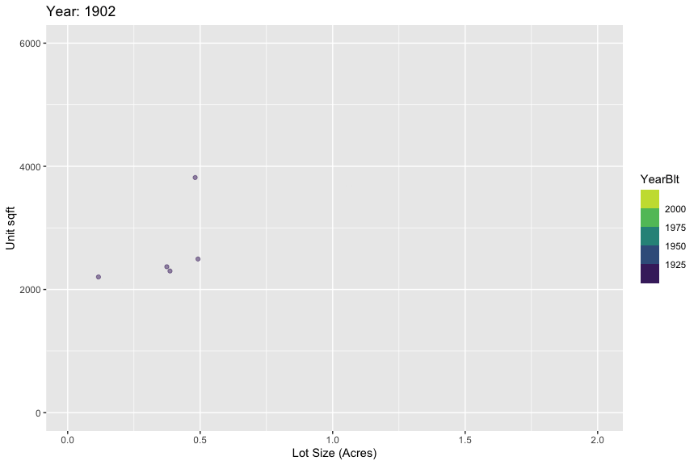

1 Introduction
Let’s look at the trend in the lot size and home size of houses built in Chapel Hill over time.
2 Get some data
We need: Year Built Structure Type, Parcel Size, and Floor area.
Let’s pull in the Orange County parcel data, which tells us where parcels are and their area. It’s available here.
We also need the Orange County Address data, which has the year built, floor area. That’s available here.
Finally, we need the municipal boundaries to accurately capture which jurisdictions are relevant. That’s available here.
show the code
download.file("https://web.co.orange.nc.us/gisdownloads/ParcelsGDB.zip", destfile = "ParcelsGDB.zip")
unzip("ParcelsGDB.zip")
download.file("https://web.co.orange.nc.us/gisdownloads/addresses.zip", destfile = "addresses.zip")
unzip("addresses.zip")
download.file("https://web.co.orange.nc.us/gisdownloads/city.zip", destfile = "city.zip")
unzip("city.zip")3 Read in the data!
And get only the Chapel Hill boundary.
show the code
data <- read_mdb("ParcelsGDB.mdb", table="PARCELVIEW")Warning: One or more parsing issues, see `problems()` for detailsshow the code
addr <- read_sf("addresses.shp")
city <- read_sf("city.shp")
ch <- city %>% filter(CITYCODE == "CH") %>% st_union() %>% st_as_sf()4 Summarise the data
First, we filter the addresses to only single family-type residences.
show the code
addr <- addr %>% filter(LBCSSubCod < 1160 & LBCSSubCod >0)
addr <- addr[ch,]
#mapview::mapview(addr,zcol="LBCSDesc")
parcels <- sf::read_sf("All_Parcels.geojson")
duplex_footprint <- 2774
d <- right_join(parcels,st_drop_geometry(addr),by="PIN") %>% filter(LBCSDesc %in% c("Res-Single Family", "Res-MH-SW", "Res-MH-DW-TW")) %>% filter(OwnerAddress!="PROPERTY OFFICE UNC") %>% st_transform(2264) %>% st_make_valid() %>% mutate(area_acr = as.numeric(st_area(.)/43560), area_ft2 = as.numeric(st_area(.))) %>% filter(area_acr<5) %>% mutate(plexable = case_when(area_ft2>=4*duplex_footprint ~ "yes", TRUE ~ "no"))We then filter to only parcels in CH, and animate the plot.
show the code
data2 <- data %>% filter(PIN %in% d$PIN)
gif <- data2 %>% filter(FinArea < 6000 & YearBlt > 1900 & Shape_Area < 43560*2) %>% arrange(desc(YearBlt)) %>%
ggplot(aes(x=Shape_Area/43560, y=FinArea, color=YearBlt)) +
geom_point(alpha=0.5) + transition_time(YearBlt) + labs(title = 'Year: {frame_time}') + shadow_mark() + scale_colour_viridis_b() + xlab("Lot Size (Acres)") + ylab("Unit sqft")
gif<-animate(gif, renderer=gifski_renderer())
anim_save("gig.gif",gif)
gif